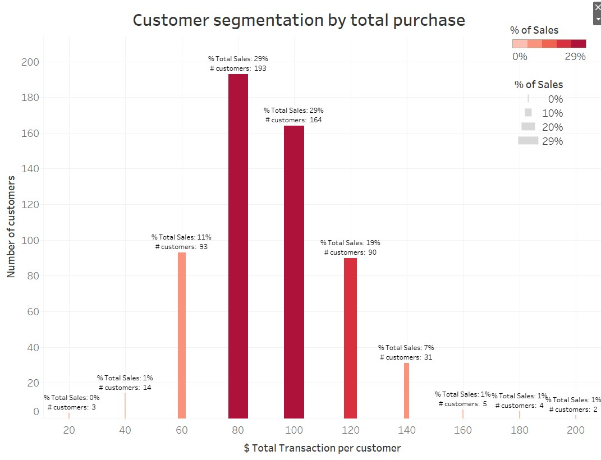
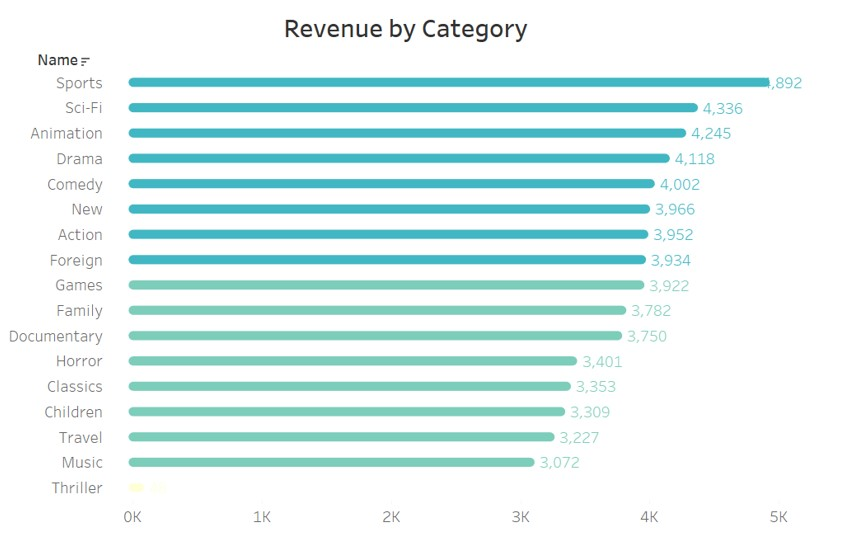

<!DOCTYPE HTML>
<!--
	Editorial by HTML5 UP
	html5up.net | @ajlkn
	Free for personal and commercial use under the CCA 3.0 license (html5up.net/license)
-->
<html>
	<head>
		<title> Portfolio SQL </title>
		<meta charset="utf-8" />
		<meta name="viewport" content="width=device-width, initial-scale=1, user-scalable=no" />
		<link rel="stylesheet" href="assets/css/main.css" />
	</head>
	<body class="is-preload">

		<!-- Wrapper -->
			<div id="wrapper">

				<!-- Main -->
					<div id="main">
						<div class="inner">

							<!-- Header -->
								<header id="header">
									<a href="index.html" class="logo"><strong>Carolina</strong> Pachon</a>
									<ul class="icons">
								
									</ul>
								</header>

							<!-- Content -->
								<section>
									<header class="main">
										<h1>Rockbuster DVD Video Rental - SQL Project</h1>
									</header>

									
									<h2>Background:</h2>
									<p>Rockbuster Stealth LLC is a movie rental company that used to have stores around the world. Facing stiff competition from streaming services such as Netflix and Amazon Prime, the Rockbuster Stealth management team is planning to use its existing movie licenses to launch an online video rental service in order to stay competitive.</p>
									<h2>Key Questions and Objectives:</h2>
								
															<ol>
																<li>Which movies contributed the most/least to revenue gain?</li>
																<li>What was the average rental duration for all videos?</li>
																<li>Which countries are Rockbuster customers based in?</li>
																<li>Where are customers with a high lifetime value based?</li>
																<li>Do sales figures vary between geographic regions?</li>
															
															</ol>
									<h2>Goal</h2>
									<p>As a Data Analyst at Rockbuster, I am supposed to address these business questions using SQL and visualizations in Tableau.</p>
									<h2>Context</h2>
									<p>This is a project I did as part of a course in data analytics at Career Foundry.</p>
									<h2>Data Sets</h2>
									<p>The database used for this project can be found in the following 
										<a href="http://www.postgresqltutorial.com/wp-content/uploads/2019/05/dvdrental.zip"> link.</a> </p>
								
										<ul class="actions">
											<li><a href="https://github.com/pachoncarolina/VideorentalSQL" class="button primary">View the complete Project</a></li>
										</ul>		
									 	
									<ul class="actions">
										<li><a href="https://public.tableau.com/app/profile/carolina.pachon/viz/RockbusterAnalysis/Story1" class="button primary">View the Storyboard in Tableau</a></li>
									</ul>
									<hr class="major" />
									<h2> Data Exploration and Querying: </h2>
									
									<div class="row">
										<div class="col-6 col-12-small">
											<h3>1. Database Exploration</h3>
											<p>Extract an entity relationship diagram and create a first draft of a data dictionary.</p>
											<p><a href="images/rockbustererd.jpg" title="Click to enlarge"></a></p>
										</div>
										<div class="col-6 col-12-small">
											<h3>2. Data Querying</h3>
											<p>Data aggregation</p>
											</p>Cleaning Data</p>
											</p>Joins</p>
											</p>Subqueries</p> 
											</p>Common Table Expressions</p>
											</p>Views
												</p>
										</div>
										<h3>Example of Queries - Which movies contributed the most/least to revenue gain? Which is the inventory for each movie? Which is the rental count for each movie?</h3>
										<div class="col-12">
											<pre><code">
	SELECT f.title, COUNT(DISTINCT i.inventory_id) AS number_copies, 				
	COUNT(r.rental_id) AS rental_count, 				
	ROUND(SUM(p.amount),0) AS revenue				
	FROM film f				
	JOIN inventory i ON f.film_id = i.film_id				
	JOIN rental r ON i.inventory_id = r.inventory_id				
	JOIN payment p ON r.rental_id = p.rental_id				
	GROUP BY f.film_id				
	ORDER BY SUM(p.amount) DESC;</code></pre>
										</div>
									</div>
									
									<hr />
									<h2> Data Analysis and Visualization</h2>
									<p>Analysis includes line chart to visualize evolution of sales, 
										customer segmentation based on spending, and a 
										cohort Analysis to measure lifetime interaction of customers throughout time
										 </p>
									<p>In this graph we can see the distribution of total sales by customer's purchase power that ranges from  $20 to $200.  We can also see the number of customers that are concentated in each range of purchase. 

										Loyal customers who made purchases over$140 only account for 10% of the revenue(7% +1%+1%+1%), while the gross of the revenue is  among those customers whose spending was between  $80 and $120 (29% +29%+19%).
					
										Instead of rewarding the most loyal customers, Rockbuster should focus where most of its business condense (customers with a higher spending of $80), meaning the PARETO CUSTOMERS. </p>
									<span class="image fit"></span>

									<p>In general, most of the categories share the same popularity except for the thriller genre. </p>
									<span class="image fit"></span>
								
									<hr class="major" />
									<h2>Final Recommendations</h2>
									<p>Rockbuster should redirect it's efforts towards the customers that represent most of its revenue, Pareto Customers. Just focusing on the best 10 customers won't make the business prosper or reach sales target easily. For this,  implementing  strategies of acquisition to expand the customer base will payoff better than encouraging loyal customers to rent more movies. </p>
									<p>For Rockbuster to transition from rental-based to a suscription-based businesss it needs to define  a flat rate princing model. These transition will imply changing its business model, for instance closing physical stores and developing strong  capabilities to stream online content. All of these changes suggest an initial heavy investmen and a complete disrupt on how Rockbuster operates.  </p>
									<hr class="major" />
							
									
								</section>

						</div>
					</div>

				<!-- Sidebar -->
					<div id="sidebar">
						<div class="inner">

							<!-- Search -->
								<section id="search" class="alt">
									<form method="post" action="#">
										<input type="text" name="query" id="query" placeholder="Search" />
									</form>
								</section>

							<!-- Menu -->
								<nav id="menu">
									<header class="major">
										<h2>Menu</h2>
									</header>
									<ul>
										<li><a href="index.html">Homepage</a></li>
										<li><a href="aboutme.html">About me</a></li>
										<li>
										<span class="opener">Python Projects</span>
												<ul>
													<li><a href="instacart.html">Instacart</a></li>
													<li><a href="Superstore Profit Analysis.html">Superstore</a></li>
													
												</ul>
												<li>
										<li><a href="Rockbuster.html">SQL Project</a></li>
										<li><a href="Influenza.html">Tableau Project</a></li>
										<li><a href="Gameco.html">Excel Project</a></li>
										
									</ul>
								</nav>

							

							<!-- Footer -->
								<footer id="footer">
									<p class="copyright">&copy; Untitled. All rights reserved. Demo Images: <a href="https://unsplash.com">Unsplash</a>. Design: <a href="https://html5up.net">HTML5 UP</a>.</p>
								</footer>

						</div>
					</div>

			</div>

		<!-- Scripts -->
			<script src="assets/js/jquery.min.js"></script>
			<script src="assets/js/browser.min.js"></script>
			<script src="assets/js/breakpoints.min.js"></script>
			<script src="assets/js/util.js"></script>
			<script src="assets/js/main.js"></script>

	</body>
</html>